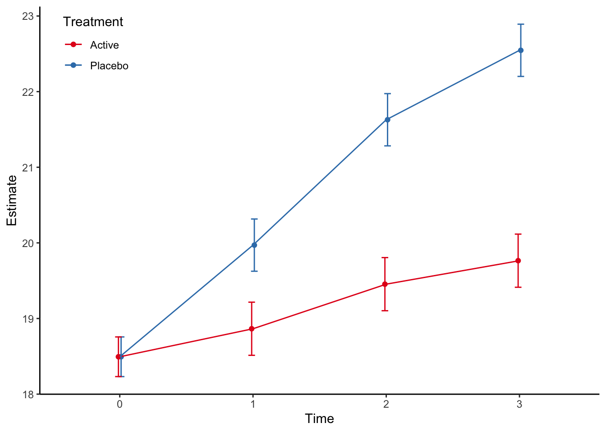

Chapter 4 Dichotomous endpoints
4.1 Single follow-up
For a single follow-up assessment of a dichotomous endpoint, the main method I use is a standard logistic regression. Then we can adjust for stratification factors in the randomisation in addition to other pre-specified covariates, both categorical and continuous. In the simulated example, we define that the primary outcome is the dichotomous categorical outcome at time 3. Note that usually the baseline status of all patients are negative for the outcome, so adjusting for baseline is not necessary.
4.1.1 Stata code
use "stata/rct", clear
tabulate catout trt if time == 3, column
logistic catout i.trt i.site covar if time==3, coef(all strata combined)
+-------------------+
| Key |
|-------------------|
| frequency |
| column percentage |
+-------------------+
Categorica | Treatment
l outcome | Placebo Active | Total
-----------+----------------------+----------
Negative | 9 22 | 31
| 18.00 45.83 | 31.63
-----------+----------------------+----------
Positive | 41 26 | 67
| 82.00 54.17 | 68.37
-----------+----------------------+----------
Total | 50 48 | 98
| 100.00 100.00 | 100.00
Logistic regression Number of obs = 98
LR chi2(5) = 48.59
Prob > chi2 = 0.0000
Log likelihood = -36.862204 Pseudo R2 = 0.3973
------------------------------------------------------------------------------
catout | Coefficient Std. err. z P>|z| [95% conf. interval]
-------------+----------------------------------------------------------------
trt |
Active | -2.890301 .7850252 -3.68 0.000 -4.428922 -1.351679
|
site |
2 | .7783404 .8580245 0.91 0.364 -.9033566 2.460037
3 | 1.423791 .7786531 1.83 0.067 -.1023412 2.949923
4 | .0253234 .8082887 0.03 0.975 -1.558893 1.60954
|
covar | 1.001078 .2329461 4.30 0.000 .5445124 1.457644
_cons | -2.463577 .8925892 -2.76 0.006 -4.21302 -.7141344
------------------------------------------------------------------------------Note that the use the coef option to get the log odds ratio estimates.
4.1.2 R code
rct <- read_dta("stata/rct.dta") %>%
modify_at(c("trt","catout"), haven::as_factor, levels = "labels") %>%
modify_at(c("site","time"), haven::as_factor)
rct %>%
filter(time==3) %>%
glm(catout ~ trt + site + covar , data=., family = binomial) %>%
summary
Call:
glm(formula = catout ~ trt + site + covar, family = binomial,
data = .)
Coefficients:
Estimate Std. Error z value Pr(>|z|)
(Intercept) -2.46358 0.89259 -2.760 0.005780 **
trtActive -2.89030 0.78502 -3.682 0.000232 ***
site2 0.77834 0.85802 0.907 0.364337
site3 1.42379 0.77865 1.829 0.067470 .
site4 0.02532 0.80829 0.031 0.975007
covar 1.00108 0.23295 4.297 1.73e-05 ***
---
Signif. codes: 0 '***' 0.001 '**' 0.01 '*' 0.05 '.' 0.1 ' ' 1
(Dispersion parameter for binomial family taken to be 1)
Null deviance: 122.318 on 97 degrees of freedom
Residual deviance: 73.724 on 92 degrees of freedom
AIC: 85.724
Number of Fisher Scoring iterations: 6Not surprisingly, the estimates are identical.
4.1.3 Reporting
Reporting for dichotomous endpoints is a bit tricky. The natural estimates from a logistic regression is odds and odds ratios, but these are less interpretable than risk differences or relative risk. As New England Journal of Medicine states in their Statistical Guidelines: “Odds ratios should be avoided, as they may overestimate the relative risks in many settings and be misinterpreted.” Fortunately, both Stata and R can estimate adjusted risk differences and relative risks from logistic regressions.
4.1.3.1 Stata code
First we compute the average prediced marginal probabilities. Basically this is done by calculating the predicted probability of a positive outcome for each patient, under both treatments, and then averaging. The standard errors are computed by the delta method.
(all strata combined)
Predictive margins Number of obs = 98
Model VCE: OIM
Expression: Pr(catout), predict()
------------------------------------------------------------------------------
| Delta-method
| Margin std. err. z P>|z| [95% conf. interval]
-------------+----------------------------------------------------------------
trt |
Placebo | .8499905 .0387218 21.95 0.000 .7740972 .9258839
Active | .5111833 .0533918 9.57 0.000 .4065374 .6158293
------------------------------------------------------------------------------The adjusted risk difference is calculated similarly.
use "stata/rct", clear
quietly logistic catout i.trt i.site covar if time==3, coef
margins, dydx(trt)(all strata combined)
Average marginal effects Number of obs = 98
Model VCE: OIM
Expression: Pr(catout), predict()
dy/dx wrt: 1.trt
------------------------------------------------------------------------------
| Delta-method
| dy/dx std. err. z P>|z| [95% conf. interval]
-------------+----------------------------------------------------------------
trt |
Active | -.3388072 .0661086 -5.13 0.000 -.4683777 -.2092367
------------------------------------------------------------------------------
Note: dy/dx for factor levels is the discrete change from the base level.We see that the risk difference is the difference of the estimated marginal probabilities we computed previously.
The relative risk is a bit more difficult to calculate, but not much. It uses the nlcom method to compute non-linear combinations of estimates.
use "stata/rct", clear
quietly logistic catout i.trt i.site covar if time==3, coef
quietly margins trt, post
margins, coeflegend
nlcom (ratio1: (_b[1.trt]/_b[0bn.trt]))(all strata combined)
Predictive margins Number of obs = 98
Model VCE: OIM
Expression: Pr(catout), predict()
------------------------------------------------------------------------------
| Margin Legend
-------------+----------------------------------------------------------------
trt |
Placebo | .8499905 _b[0bn.trt]
Active | .5111833 _b[1.trt]
------------------------------------------------------------------------------
ratio1: (_b[1.trt]/_b[0bn.trt])
------------------------------------------------------------------------------
| Coefficient Std. err. z P>|z| [95% conf. interval]
-------------+----------------------------------------------------------------
ratio1 | .6013989 .0686524 8.76 0.000 .4668426 .7359552
------------------------------------------------------------------------------The trick is to know what goes into the _b[]-brackets, which will be revealed using the `coeflegend´-option. Note that I do not know the properties of this estimator, and it might be clever to check the estimates using bootstrap.
Some journals require calculation of the number needed to treat (NNT), at least if the confidence interval of the adjusted risk difference does not include zero (for which the NNT is undefined). This is simply done by inverting the adjusted risk difference estimate (both point estimate and the confidence limits).
4.1.3.2 R code
The average predicted marginal probabilities was previously not easily computed in R, but with the emergence of the very nice marginaleffects-package, this is now much easier:
mod <- rct %>%
filter(time == 3) %>%
glm(catout ~ trt + site + covar , data=., family = binomial)
mod %>%
avg_predictions(variables = list(trt = c("Active", "Placebo")), type = "response")
trt Estimate Std. Error z Pr(>|z|) S 2.5 % 97.5 %
Active 0.511 0.0534 9.57 <0.001 69.7 0.407 0.616
Placebo 0.850 0.0387 21.95 <0.001 352.4 0.774 0.926
Columns: trt, estimate, std.error, statistic, p.value, s.value, conf.low, conf.high
Type: response We notice that the estimates are equal to the Stata output..
Another option is to bootstrap the predicted marginal predictions:
library(boot)
fpred <- function(formula, data, indices){
d <- data[indices,]
fit <- glm(formula, data = d, family = binomial)
pred <- prediction(fit,data = d, at = list(trt = c("Active", "Placebo"))) %>%
as_tibble %>%
group_by(trt) %>%
summarise(mean = mean(fitted)) %>%
ungroup() %>%
mutate(name = paste0(trt)) %>%
select(name,mean) %>%
spread(name,mean) %>%
as_vector
return(pred)
}
data <- filter(rct, time == 3)
result <- boot(data = data,
statistic = fpred,
R = 10000,
formula = catout ~ trt + site + covar,
parallel = "multicore",
ncpus = 4) %>%
tidy(conf.int = TRUE) Error in prediction(fit, data = d, at = list(trt = c("Active", "Placebo"))): could not find function "prediction"| term | statistic | std.error | conf.low | conf.high |
|---|---|---|---|---|
| Active | 0.601 | 0.081 | 0.445 | 0.763 |
We see that the estimates are identical to the Stata estimates, although the standard errors and confidence limits are a bit different. But I actually think the bootstrap estimates are better.
The estimated marginal risk difference in R is computed using the marginaleffects-package again.
rlogistic <- rct %>%
filter(time==3) %>%
glm(catout ~ trt + site + covar , data=., family = binomial)
rlogistic %>%
avg_comparisons(variables = list(trt = c("Active", "Placebo")), type = "response")
Term Contrast Estimate Std. Error z Pr(>|z|) S 2.5 % 97.5 %
trt Placebo - Active 0.339 0.0661 5.13 <0.001 21.7 0.209 0.468
Columns: term, contrast, estimate, std.error, statistic, p.value, s.value, conf.low, conf.high
Type: response We see that the estimates are identical to the Stata estimates.
The relative risk is very easily computed in R using the marginaleffects-package:
rlogistic <- rct %>%
filter(time==3) %>%
glm(catout ~ trt + site + covar , data=., family = binomial)
rlogistic %>%
avg_comparisons(variables = list(trt = c("Active", "Placebo")), type = "response", comparison = "ratioavg")
Term Contrast Estimate Std. Error z Pr(>|z|) S 2.5 %
trt mean(Placebo) / mean(Active) 1.66 0.19 8.76 <0.001 58.8 1.29
97.5 %
2.03
Columns: term, contrast, estimate, std.error, statistic, p.value, s.value, conf.low, conf.high, predicted_lo, predicted_hi, predicted
Type: response The estimate is the inverse of the Stata estimate, and the confidence limits are very similar. There is probably a slight difference in how these are computed.
This is possible to do also by bootstrapping, but it is a bit more complicated:
library(boot)
library(prediction)
fpred <- function(formula, data, indices){
d <- data[indices,]
fit <- glm(formula, data = d, family = binomial)
pred <- prediction(fit,data = d, at = list(trt = c("Active", "Placebo"))) %>%
as_tibble %>%
group_by(trt) %>%
summarise(mean = mean(fitted)) %>%
ungroup() %>%
mutate(name = paste0(trt)) %>%
select(name,mean) %>%
spread(name,mean) %>%
as_vector
return(pred["Active"]/pred["Placebo"])
}
data <- filter(rct, time == 3)
result <- boot(data = data,
statistic = fpred,
R = 10000,
formula = catout ~ trt + site + covar,
parallel = "multicore",
ncpus = 4) %>%
tidy(conf.int = TRUE)
result %>%
select(-bias) %>%
knitr::kable(digits = 3)| term | statistic | std.error | conf.low | conf.high |
|---|---|---|---|---|
| Active | 0.601 | 0.081 | 0.45 | 0.77 |
4.2 Repeated follow-up
When there are repeated dichotomous endpoints, there are usually two methods available, either the generalized estimating equations method or the generalized mixed model method. I prefer the mixed model approach because it has better missing data properties, and I like that the parameter estimates are interpretable conditional on the subject. In my mind it is more aligned to a causal interpretation. I will show how to do the mixed logistic regression model. We skip the simple model and go straight to a model with treatment-time interaction. Note that usually a dichotomous endpoint all have the same value at baseline (all subjects are in the same state), thus we rarely include the baseline. The model is a simple random intercept model, but it could of course also be expanded to a random intercept and slope model.
4.3 Treatment-time interaction model
In Stata, the model is coded as:
use "stata/rct", clear
bysort time: tabulate catout trt, column
melogit catout i.trt i.site covar i.time i.trt#i.time if time != 0 || pid: (all strata combined)
-------------------------------------------------------------------------------
-> time = 0
+-------------------+
| Key |
|-------------------|
| frequency |
| column percentage |
+-------------------+
Categorica | Treatment
l outcome | Placebo Active | Total
-----------+----------------------+----------
Negative | 50 48 | 98
| 100.00 100.00 | 100.00
-----------+----------------------+----------
Total | 50 48 | 98
| 100.00 100.00 | 100.00
-------------------------------------------------------------------------------
-> time = 1
+-------------------+
| Key |
|-------------------|
| frequency |
| column percentage |
+-------------------+
Categorica | Treatment
l outcome | Placebo Active | Total
-----------+----------------------+----------
Negative | 24 32 | 56
| 48.00 66.67 | 57.14
-----------+----------------------+----------
Positive | 26 16 | 42
| 52.00 33.33 | 42.86
-----------+----------------------+----------
Total | 50 48 | 98
| 100.00 100.00 | 100.00
-------------------------------------------------------------------------------
-> time = 2
+-------------------+
| Key |
|-------------------|
| frequency |
| column percentage |
+-------------------+
Categorica | Treatment
l outcome | Placebo Active | Total
-----------+----------------------+----------
Negative | 12 29 | 41
| 24.00 60.42 | 41.84
-----------+----------------------+----------
Positive | 38 19 | 57
| 76.00 39.58 | 58.16
-----------+----------------------+----------
Total | 50 48 | 98
| 100.00 100.00 | 100.00
-------------------------------------------------------------------------------
-> time = 3
+-------------------+
| Key |
|-------------------|
| frequency |
| column percentage |
+-------------------+
Categorica | Treatment
l outcome | Placebo Active | Total
-----------+----------------------+----------
Negative | 9 22 | 31
| 18.00 45.83 | 31.63
-----------+----------------------+----------
Positive | 41 26 | 67
| 82.00 54.17 | 68.37
-----------+----------------------+----------
Total | 50 48 | 98
| 100.00 100.00 | 100.00
Fitting fixed-effects model:
Iteration 0: Log likelihood = -133.59899
Iteration 1: Log likelihood = -129.32428
Iteration 2: Log likelihood = -129.32244
Iteration 3: Log likelihood = -129.32244
Refining starting values:
Grid node 0: Log likelihood = -130.87679
Fitting full model:
Iteration 0: Log likelihood = -130.87679
Iteration 1: Log likelihood = -129.7867
Iteration 2: Log likelihood = -129.37214
Iteration 3: Log likelihood = -129.31054
Iteration 4: Log likelihood = -129.31042
Iteration 5: Log likelihood = -129.31042
Mixed-effects logistic regression Number of obs = 294
Group variable: pid Number of groups = 98
Obs per group:
min = 3
avg = 3.0
max = 3
Integration method: mvaghermite Integration pts. = 7
Wald chi2(9) = 57.65
Log likelihood = -129.31042 Prob > chi2 = 0.0000
------------------------------------------------------------------------------
catout | Coefficient Std. err. z P>|z| [95% conf. interval]
-------------+----------------------------------------------------------------
trt |
Active | -1.445692 .5336445 -2.71 0.007 -2.491616 -.3997679
|
site |
2 | -.0293421 .4666747 -0.06 0.950 -.9440077 .8853234
3 | .72617 .4145006 1.75 0.080 -.0862363 1.538576
4 | .5185491 .4721013 1.10 0.272 -.4067524 1.443851
|
covar | .9174909 .1319527 6.95 0.000 .6588684 1.176113
|
time |
2 | 1.787348 .5856394 3.05 0.002 .6395156 2.93518
3 | 2.365878 .6353582 3.72 0.000 1.120599 3.611157
|
trt#time |
Active#2 | -1.406754 .7657322 -1.84 0.066 -2.907561 .0940536
Active#3 | -1.127376 .785537 -1.44 0.151 -2.667 .4122484
|
_cons | -4.424402 .7595232 -5.83 0.000 -5.91304 -2.935764
-------------+----------------------------------------------------------------
pid |
var(_cons)| .0684106 .4545936 1.51e-07 31004.17
------------------------------------------------------------------------------
LR test vs. logistic model: chibar2(01) = 0.02 Prob >= chibar2 = 0.4384In R, this model is coded as:
library(lme4)
rct %>%
filter(time != 0) %>%
glmer(catout ~ trt + time + trt*time + site + covar + (1|pid),
data = .,
family = binomial,
nAGQ = 7) %>%
summary()Generalized linear mixed model fit by maximum likelihood (Adaptive
Gauss-Hermite Quadrature, nAGQ = 7) [glmerMod]
Family: binomial ( logit )
Formula: catout ~ trt + time + trt * time + site + covar + (1 | pid)
Data: .
AIC BIC logLik deviance df.resid
280.6 321.1 -129.3 258.6 283
Scaled residuals:
Min 1Q Median 3Q Max
-2.8902 -0.5490 0.1407 0.5132 5.6565
Random effects:
Groups Name Variance Std.Dev.
pid (Intercept) 0.06842 0.2616
Number of obs: 294, groups: pid, 98
Fixed effects:
Estimate Std. Error z value Pr(>|z|)
(Intercept) -4.42440 0.75952 -5.825 5.70e-09 ***
trtActive -1.44556 0.53364 -2.709 0.006751 **
time2 1.78740 0.58564 3.052 0.002273 **
time3 2.36568 0.63534 3.724 0.000196 ***
site2 -0.02946 0.46667 -0.063 0.949661
site3 0.72598 0.41449 1.751 0.079861 .
site4 0.51846 0.47210 1.098 0.272110
covar 0.91750 0.13195 6.953 3.57e-12 ***
trtActive:time2 -1.40690 0.76574 -1.837 0.066163 .
trtActive:time3 -1.12718 0.78553 -1.435 0.151305
---
Signif. codes: 0 '***' 0.001 '**' 0.01 '*' 0.05 '.' 0.1 ' ' 1
Correlation of Fixed Effects:
(Intr) trtAct time2 time3 site2 site3 site4 covar trtA:2
trtActive -0.117
time2 -0.555 0.349
time3 -0.604 0.295 0.475
site2 -0.188 -0.031 0.029 0.042
site3 -0.292 -0.115 0.059 0.077 0.477
site4 -0.306 -0.061 0.052 0.078 0.398 0.462
covar -0.818 -0.226 0.293 0.373 -0.074 0.032 0.086
trtActv:tm2 0.385 -0.601 -0.750 -0.343 -0.020 -0.031 -0.037 -0.181
trtActv:tm3 0.363 -0.594 -0.336 -0.745 -0.029 -0.015 -0.048 -0.161 0.4704.3.1 Reporting
Plotting i Stata
use stata/rct, clear
quietly melogit catout i.trt i.site covar i.time i.trt#i.time if time != 0 || pid:
*Compute the predictive margins by time and treatment
margins time#trt
*Plot the predictive margins. Note that the arguments after the comma is just to prettify the plot.
marginsplot, graphregion(color(white)) graphregion(color(white)) plotregion(color(white)) ytitle("Marginal estimates") ylabel(,nogrid) legend(region(color(none) lstyle(none)) cols(1) ring(0) bplacement(nwest)) title("")
graph export stata/figures/cat_fig1.pdf, replace (all strata combined)
Predictive margins Number of obs = 294
Model VCE: OIM
Expression: Marginal predicted mean, predict()
------------------------------------------------------------------------------
| Delta-method
| Margin std. err. z P>|z| [95% conf. interval]
-------------+----------------------------------------------------------------
time#trt |
1#Placebo | .5476187 .0577701 9.48 0.000 .4343913 .660846
1#Active | .3187847 .0540835 5.89 0.000 .2127831 .4247863
2#Placebo | .7897137 .0463852 17.03 0.000 .6988004 .880627
2#Active | .3770772 .0557815 6.76 0.000 .2677475 .4864068
3#Placebo | .8467085 .0410465 20.63 0.000 .7662588 .9271581
3#Active | .5147246 .0571038 9.01 0.000 .4028032 .626646
------------------------------------------------------------------------------
Variables that uniquely identify margins: time trt
file stata/figures/cat_fig1.pdf saved as PDF formatFigure 4.1: Margins plot by Stata
The same in R using the marginaleffects-package:
mod <- rct %>%
filter(time != 0) %>%
glmer(catout ~ trt + time + trt*time + site + covar + (1|pid),
data = .,
family = binomial,
nAGQ = 7)
pred <- mod %>%
avg_predictions(variables = list(trt = c( "Placebo", "Active"), time = c("1","2", "3")), type = "response") Warning: For this model type, `marginaleffects` only takes into account the
uncertainty in fixed-effect parameters. You can use the `re.form=NA`
argument to acknowledge this explicitly and silence this warning.
time trt Estimate Std. Error z Pr(>|z|) S 2.5 % 97.5 %
1 Placebo 0.548 0.0580 9.45 <0.001 67.9 0.434 0.662
1 Active 0.318 0.0548 5.80 <0.001 27.2 0.210 0.425
2 Placebo 0.791 0.0462 17.13 <0.001 216.1 0.701 0.882
2 Active 0.376 0.0561 6.70 <0.001 35.5 0.266 0.486
3 Placebo 0.848 0.0411 20.62 <0.001 311.3 0.767 0.929
3 Active 0.515 0.0578 8.91 <0.001 60.8 0.402 0.628
Columns: trt, time, estimate, std.error, statistic, p.value, s.value, conf.low, conf.high
Type: response The estimated marginal plot is then given by:
pred %>%
ggplot(aes(time, estimate, color=trt, group=trt)) +
geom_point(position = position_dodge(0.04)) +
geom_line() +
geom_errorbar(aes(ymin = conf.low, ymax = conf.high),
width=.2,
position = position_dodge(0.04)) +
ylab("Estimate") +
xlab("Time") +
theme_classic() +
theme(legend.position=c(0.1,0.9)) +
scale_colour_brewer(palette = "Set1", name = "Treatment")
The treatment differences at different timepoints are then calculated with:
use "stata/rct", clear
quietly melogit catout i.trt i.site covar i.time i.trt#i.time if time != 0 || pid:
margins time, dydx(trt)(all strata combined)
Average marginal effects Number of obs = 294
Model VCE: OIM
Expression: Marginal predicted mean, predict()
dy/dx wrt: 1.trt
------------------------------------------------------------------------------
| Delta-method
| dy/dx std. err. z P>|z| [95% conf. interval]
-------------+----------------------------------------------------------------
0.trt | (base outcome)
-------------+----------------------------------------------------------------
1.trt |
time |
1 | -.228834 .079152 -2.89 0.004 -.383969 -.0736989
2 | -.4126365 .0726801 -5.68 0.000 -.5550869 -.2701861
3 | -.3319839 .070613 -4.70 0.000 -.4703829 -.1935849
------------------------------------------------------------------------------
Note: dy/dx for factor levels is the discrete change from the base level.In R this is done with the marginaleffects-package:
mod <- rct %>%
filter(time != 0) %>%
glmer(catout ~ trt + time + trt*time + site + covar + (1|pid),
data = .,
family = binomial,
nAGQ = 7)
mod %>%
avg_comparisons(variables = list(trt = c("Active", "Placebo")), by = "time", type = "response", re.form = NA)
Term Contrast time Estimate Std. Error z Pr(>|z|) S
trt mean(Placebo) - mean(Active) 1 0.230 0.0797 2.89 0.00386 8.0
trt mean(Placebo) - mean(Active) 2 0.414 0.0728 5.69 < 0.001 26.2
trt mean(Placebo) - mean(Active) 3 0.333 0.0704 4.73 < 0.001 18.7
2.5 % 97.5 %
0.0741 0.387
0.2717 0.557
0.1947 0.471
Columns: term, contrast, time, estimate, std.error, statistic, p.value, s.value, conf.low, conf.high, predicted_lo, predicted_hi, predicted
Type: response We see the results are slightly different to the Stata results, but the differences are small.